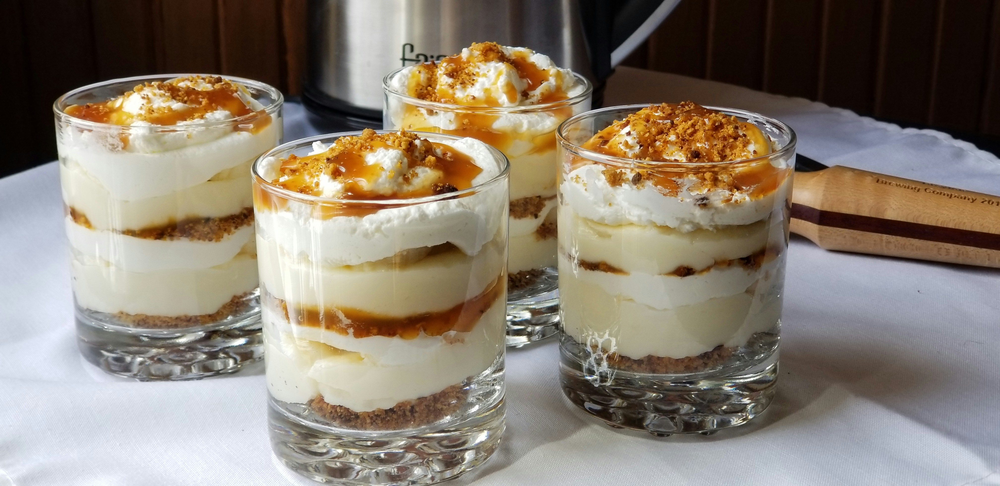

Grandma's Banana Pudding

My grandma's old-fashioned banana pudding recipe was always something she made from memory, but I let her talk it out so I could write it down. She ran a country club and restaurant in her day; she can make amazing food, but she doesn't measure anything and makes most foods from memory.
Prep Time: 25 mins | Cook Time: 35 mins | Servings: 8
Ingredients
Pudding:
- 1 cup white sugar
- ½ cup all-purpose flour
- ½ teaspoon salt
- 4 large eggs, separated, divided
- 2 cups milk
- 1 teaspoon vanilla extract
- 1 tablespoon butter
- 1 (12 ounce) package vanilla wafers, divided
- 4 medium bananas, sliced, or more to taste
Meringue:
- ¼ teaspoon cream of tartar
- 5 tablespoons white sugar
- ½ teaspoon vanilla extract
Steps
- Preheat the oven to 375 degrees F (190 degrees C).
- Make the pudding: Combine sugar, flour, and salt in a bowl. Set egg whites aside for meringue.
- Beat egg yolks in a heavy saucepan over medium heat. Add sugar mixture alternately with milk and vanilla, stirring constantly. Bring to a simmer and cook until slightly thickened, 8 to 10 minutes. Add butter; continue stirring until thickened to a pudding-like consistency, 5 to 7 minutes more.
- Line the bottom of a baking dish with 1/2 of the wafers. Layer 1/2 of the banana slices over wafers and cover with 1/2 of the pudding. Repeat layers once more.
- Make the meringue: Beat reserved egg whites in a glass, metal, or ceramic bowl, gradually adding cream of tartar, until soft peaks form. Add sugar and continue beating on high speed until stiff peaks form. Fold in vanilla. Spoon meringue over pudding.
- Bake in the preheated oven until meringue browns, 15 to 20 minutes. Let cool before serving.
Recipe source | Home